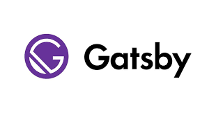

Why you use consider Gatsby JS for your JAMstack website
If you’re building a JAMstack site, there are a few key choices you need to make - not least of all the site generator that you use.
There are a number of options to choose from but, since JAMstack development focuses on lean, fast loading & performance with a focus on static elements, the generator you choose becomes a key driver (or bottleneck) of this process.
That’s why we recommend Gatsby. We’ve used it before, we’re using it now and we’re very confident we’ll use it again! Let’s explore why Gatsby and JAMstack go so well together.
But first…
What is Gatsby?
Gatsby - or Gatsby JS - is a static website generator. You can essentially think of it as a website publisher. It takes the input files needed and both converts and publishes them into a web-friendly format.
The “static” part comes from the fact that Gatsby does this by converting to HTML, CSS, JavaScript and a splash of raw data - which keeps websites fast, performant and easy to load. (These same key principles behind static websites also power JAMstack, which we’ll get to later.)
However, while there are many static generators to choose from, we appreciate Gatsby for a few key reasons.
Advantages of Using Gatsby
If you’ve already used Gatsby JS, you likely already know of its many benefits. However, for those that don’t, here are some of the most important factors worth considering:
It’s Very Compatible
At the start, we said that static generators focus on HTML, CSS and JavaScript. It’s true, they do. But they also often have some extra compatibility included and, with Gatsby, we are able to use a range of more modern technologies.
Specifically, Gatsby can utilize the likes of ReactJS, GraphQL, Webpack and more - even some of the most recent JavaScript and CSS releases.
This means that we can rely on Gatsby to produce all of the static content but, if some dynamic elements are needed, we can turn to go-to favourites such as ReactJS without any problems!
It’s Great for PWAs
Progressive Web Apps (PWA) are becoming more and more popular online. They’re data-friendly, secure and, with help of native-wrappers, can even work as apps on smart devices. We’ve written about the benefits of PWA technology before, so we won’t go into it much here.
However, PWAs want fast loading and alongside static content, look to use the likes of React where possible, too. Needless to say, Gatsby isn’t just great for traditional websites, it’s also ideal for PWA projects as well.
It Prefetches
On that note, we need to mention that Gatsby is great at prefetching content. While one page is loaded, it’s already preloading other assets where possible (which isn’t a problem performance-wise when focusing on static elements) to ensure an incredibly smooth load.
Of course, this is great for websites, but it’s also great for PWAs, which seek to load as much as possible and provide a seamless experience. Here, everything aligns just right.
It’s Well Supported
The most popular technologies don’t just exist because of their official development team - it’s through an active and supportive community that the technology is adapted to suit the wider needs of the industry. Gatsby is no exception to this.
It’s very well supported, with developers contributing the likes of new plugins, transformers and more. Whatever you need, if it isn’t part of the official Gatsby package, there’s a good chance someone has already worked on a solution.
Alongside its official support, this means there are relatively few challenges Gatsby can’t overcome. Want to add third-party support, pull source data from different sources (such as using a content management system in your JAMstack package) and even using markup (another JAMstack friendly option) with the data? The community has ensured Gatsby is able to do all of that.
Gatsby & JAMstack Development
Now let’s look at Gatsby more in the context of JAMstack. All of the above benefits, of course, mirror the needs of JAMstack development itself, but here’s why we turn to Gatsby over other generators time and time again.
Performance Is a Priority
Both JAMstack and static site generators focus on performance. While there are many options to choose from, the reason we keep choosing Gatsby JS is that it’s often just the best. It’s very well optimized and, thanks to community support, it continues to be a leading choice.
For example, if you want to utilize responsive images - which is essentially a must for responsive design - there’s a plugin for that. Of course, it’s designed to keep your web projects as easy to load as possible.
Whatever you need in your JAMstack development, the chances are Gatsby has it covered.
Mostly Static
Static generators play a key role in JAMstack - by focusing on static HTML elements as much as possible, loading and overall performance are greatly improved. The key phrase here, however, is “as much as possible”.
Most modern websites require dynamic content. Problems typically arise when this is used too heavily. With Gatsby, we circumvent this issue entirely. We’re still prefetching and loading static elements as much as possible, with cuts down on loading issues, saving any computational power for those dynamic elements that we need.
All of this is possible with Gatsby, unlike some other generators that rely too heavily on the static side of things, because it’s compatible with (and regularly updated) these modern technologies, like React Native.
Works Well With CMS
Generators like Gatsby often utilize content delivery networks but, in reality, websites evolve all the time. When content is added, removed or updated frequently, a CMS is more suitable for those individuals who need to access the content.
More specifically, the CMS should act like the database for the generator to draw from. Thankfully, Gatsby is well supported in virtually every CMS we can think of, from Netlify to Contentful.
Gatsby & JAMstack!
There you have it. We’re not saying that other generators aren’t up to the task (indeed, there are numerous options on the market), but simply that we feel Gatsby makes a much stronger argument than the others. From our own experiences, it’s a tried and tested method that we’ve yet to supersede.
The next time you’re developing a JAMstack project, why not give Gatsby a try?